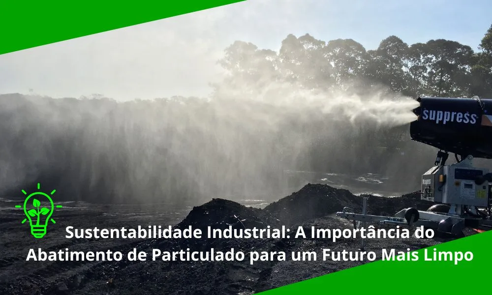

Sustentabilidade Industrial: A Importância do Abatimento de Particulado
Por que o controle de poeira é estratégico para a saúde, a conformidade legal e a reputação das empresas.

O particulado em suspensão é composto por partículas sólidas ou líquidas extremamente pequenas, dispersas no ar, geradas por atividades industriais como mineração, transporte de materiais e processamento de minérios. Essas partículas variam em tamanho, desde poeira visível até partículas microscópicas conhecidas como PM10 e PM2,5, especialmente perigosas por penetrarem profundamente nos pulmões. Compreender a dinâmica dessas emissões, e as tecnologias disponíveis para controlá-las, é fundamental para qualquer operação industrial que aspira à sustentabilidade real, não apenas ao cumprimento mínimo das normas.
O que são PM10 e PM2,5 e por que importam
PM10 designa partículas com diâmetro aerodinâmico de até 10 micrômetros, suficientemente pequenas para ultrapassar as defesas das vias aéreas superiores e atingir os brônquios. Já o PM2,5, com diâmetro de até 2,5 micrômetros, penetra ainda mais profundamente, alcançando os alvéolos pulmonares e, em alguns casos, a corrente sanguínea. Quanto menor a partícula, maior o potencial de dano ao organismo.
Em ambientes industriais, as fontes de PM10 e PM2,5 incluem operações de britagem e moagem, movimentação de granéis a seco, tráfego de veículos pesados sobre pistas não pavimentadas, processos de combustão e transferências em correias transportadoras. A formação dessas partículas é contínua durante a operação, e sem medidas ativas de controle, a concentração no ar pode atingir níveis muito acima dos limites estabelecidos pela Resolução CONAMA 491/2018, padrão anual de 20 µg/m³ para PM2,5 e 40 µg/m³ para PM10.
Riscos à saúde e ao meio ambiente
A exposição a PM10 e PM2,5 pode causar doenças respiratórias como silicose, asma e bronquite crônica, além de complicações cardiovasculares em exposições prolongadas. Trabalhadores expostos sofrem com licenças médicas frequentes e perda de produtividade, elevando os custos para as empresas. Esse tema é tratado em profundidade em nosso artigo sobre riscos da poeira para o organismo.
No meio ambiente, o particulado prejudica ecossistemas próximos às operações, causa danos à vegetação e à biodiversidade, e em áreas urbanas pode agravar problemas de saúde pública e gerar pressão regulatória. A deposição de particulado sobre superfícies de corpos d'água também pode afetar sua qualidade e a vida aquática das regiões vizinhas às operações industriais.
Além dos impactos diretos, o particulado tem efeitos secundários sobre a própria operação: reduz a visibilidade em frentes de lavra, aumentando o risco de acidentes; contamina rolamentos e sistemas de vedação de equipamentos rotativos, acelerando o desgaste; e compromete a qualidade de produtos que precisam ser mantidos em condições de baixa umidade e contaminação. O impacto financeiro cumulativo dessas consequências é frequentemente subestimado pelas empresas, algo que analisamos em profundidade em nosso artigo sobre o custo da poeira para a empresa.
Por que o controle de particulado é essencial
A sustentabilidade industrial não é apenas uma exigência ética, mas uma obrigação estratégica para empresas que buscam se destacar em um mercado competitivo. O controle de particulado é essencial para múltiplos objetivos corporativos que se reforçam mutuamente.
1. Cumprir regulamentações ambientais
No Brasil, órgãos como o IBAMA e a Agência Nacional de Mineração (ANM) exigem que as indústrias limitem as emissões de particulado para atender às normas de qualidade do ar. O não cumprimento pode resultar em multas severas, sanções e até interrupção das operações. Além das normas federais, os estados possuem legislações próprias, frequentemente mais restritivas em regiões com histórico de problemas de qualidade do ar, que estabelecem limites adicionais e obrigações de monitoramento e reporte.
A conformidade regulatória também é condição para renovação de licenças ambientais de operação. Uma licença não renovada por descumprimento das condicionantes ambientais pode paralisar a operação até que os problemas sejam sanados, um custo potencialmente muito superior ao do investimento em controle preventivo.
2. Reduzir custos operacionais
Equipamentos obstruídos por poeira funcionam com menor eficiência, aumentando o consumo de energia e os custos de manutenção. O controle de particulado reduz a necessidade de limpezas frequentes e previne paradas não programadas, um impacto financeiro que muitas empresas subestimam.
Em operações de mineração, por exemplo, britadores e peneiras com filtros entupidos perdem capacidade de processamento. Motores elétricos operando em ambientes com alta concentração de poeira têm vida útil reduzida. Correias transportadoras acumulam material que desequilibra a distribuição de carga, aumentando o desgaste de rolos e estruturas. Cada um desses fatores gera custos indiretos que, somados, podem superar em muito o investimento em controle de particulado.
3. Fortalecer a reputação corporativa e o desempenho ESG
Empresas que adotam práticas sustentáveis demonstram responsabilidade social, conquistando a confiança de investidores, clientes e comunidades locais, cada vez mais relevante em setores altamente fiscalizados. O framework ESG (Environmental, Social and Governance) tornou o controle de emissões um indicador mensurável e reportável, que analistas de investimento e grandes clientes corporativos acompanham como parte de suas avaliações de risco e conformidade, como discutido em nosso artigo sobre importância da sustentabilidade nas empresas.
Padrões regulatórios brasileiros para controle de particulado
O Brasil conta com um conjunto abrangente de normas que regulam as emissões de particulado em atividades industriais. Entre as principais, destacam-se a Resolução CONAMA 491/2018, que estabelece os padrões nacionais de qualidade do ar incluindo PM10 e PM2,5; a NR-9, que exige programas de prevenção de riscos ambientais nas empresas; e as normas específicas da ANM para o setor mineral. Para operações que envolvem processos de combustão, a Resolução CONAMA 382/2006 estabelece limites de emissão de poluentes por setor produtivo. O atendimento simultâneo a toda essa legislação exige monitoramento contínuo, registros documentais e, inevitavelmente, tecnologia de controle de emissões.
Canhões de névoa: tecnologia para o abatimento de particulado
Entre as tecnologias disponíveis para o controle de particulado em operações de mineração e outros setores industriais, os canhões de névoa se destacam como solução eficiente, sustentável e econômica. Utilizam microgotículas de água para capturar partículas em suspensão, promovendo sua precipitação ao solo. Os equipamentos Suppress, como o SP-55 e o SP-65, alcançam até 80 metros, garantindo cobertura ampla e eficaz, com mínima quantidade de água e total conformidade com a NR-12.
Como a granulometria da gotícula afeta a eficiência
A eficácia de um canhão de névoa não depende apenas da vazão de água, mas principalmente do tamanho das gotículas produzidas. Gotículas muito finas tendem a evaporar antes de colidir com o particulado em condições de baixa umidade, enquanto gotículas maiores não permanecem tempo suficiente em suspensão para capturar partículas mais leves, como o PM2,5. Por isso, a engenharia dos bicos atomizadores é determinante para o desempenho real do equipamento em campo, não apenas o volume de água aplicado.
A Suppress investe continuamente no desenvolvimento e aperfeiçoamento dos bicos atomizadores de seus equipamentos, buscando o ponto de equilíbrio entre tamanho de gotícula, resistência ao vento e eficiência de captura para cada tipo de aplicação. Esse conhecimento acumulado é um diferencial técnico que se traduz em desempenho real, e que só se constrói com anos de operação em campo junto a clientes de diferentes setores.
Resultados observados em campo
Em operações de mineração que adotaram canhões de névoa, foram registradas reduções expressivas nos níveis de poeira em suspensão e melhoria na produtividade, com menor necessidade de limpeza frequente de equipamentos. Em canteiros de obras em áreas urbanas, o uso de soluções móveis de supressão ajudou a reduzir reclamações de moradores e a melhorar as condições de trabalho dos operários. Um exemplo documentado dessa performance é o estudo técnico realizado no Porto Sudeste, que avaliou a eficiência dos canhões de névoa Suppress em condições reais de operação portuária com granéis minerais.
Setores com maior demanda por controle de particulado
Embora a mineração seja o setor mais associado ao tema, o abatimento de particulado é estratégico também para cimenteiras, tratado em cimenteiras e seus impactos ambientais: e para operações siderúrgicas, onde processos como sinterização e aciaria geram volumes elevados de material particulado que exigem controle contínuo.
Terminais portuários e de carga a granel são outro setor com demanda crescente por soluções de controle de particulado. O manuseio de minérios, carvão, cereais e outros granéis sólidos em ambientes abertos e sujeitos a ventos cria desafios específicos que os canhões de névoa de grande alcance, como o SP-150, são projetados para resolver.
A transição para práticas sustentáveis não é apenas uma exigência regulatória, mas também uma oportunidade de inovação, economia operacional e fortalecimento da imagem corporativa.
Conclusão
O controle de particulado é uma das iniciativas centrais para alcançar a sustentabilidade industrial. Investir em soluções como os canhões de névoa contribui para a melhoria da qualidade do ar, a proteção da saúde dos trabalhadores, a conformidade regulatória e a redução dos custos operacionais, construindo um futuro mais limpo e eficiente para a operação. A boa notícia é que as tecnologias disponíveis hoje permitem alcançar todos esses objetivos simultaneamente, com investimento proporcional ao porte da operação.
Perguntas Frequentes
O que diferencia PM10 de PM2,5?
PM10 são partículas com diâmetro de até 10 micrômetros, enquanto PM2,5 têm diâmetro de até 2,5 micrômetros. Quanto menor a partícula, mais profundamente ela penetra no sistema respiratório, tornando o PM2,5 particularmente mais perigoso à saúde.
Canhões de névoa conseguem capturar partículas PM2,5?
Sim, desde que o equipamento seja dimensionado com a granulometria de gotícula adequada. Gotículas extremamente finas são necessárias para interceptar partículas tão pequenas quanto o PM2,5, o que exige engenharia específica de bicos atomizadores.
Quais órgãos fiscalizam o controle de particulado no Brasil?
No Brasil, o controle de emissões de particulado é fiscalizado principalmente pelo IBAMA e pela Agência Nacional de Mineração (ANM), além de órgãos ambientais estaduais, que podem aplicar multas e sanções a operações que não atendam aos padrões de qualidade do ar exigidos.
Quer alinhar sua operação às práticas de sustentabilidade industrial?
Fale com nossos engenheiros e descubra a solução ideal para o seu desafio.
Solicitar Proposta